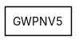
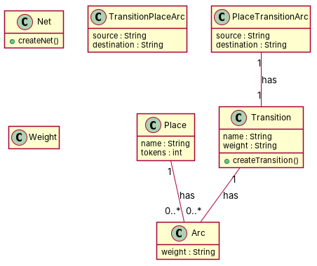

← all cases
D2/GWPNV5 — model qwen, condition B, run 1
1. Requirements (input)
R1: A petri net model has places
R2: The Petri net package has a class Transition
R3: The PetriNet package declares one Net class
R4: An arc of a Petri net is associated with a weight.
R5: A Petri net has place-transition arcs.
R6: A Petri net is composed of transition-place arcs.
R7: There are tokens in a Petri net.
R8: Petri nets models have places, which are associated to exactly one net
R9: A place has zero to n input arcs
R10: In the PetriNet package, a Transition object belongs to at most one Net object
R11: A transition of a Petri net has zero to n output arcs.
R12: A Petri net is composed of at least one place.
R13: A place-transition arc in a Petri net has exactly one transition representing the destination of the arc.
R14: In a Petri net, a transition-place arc has exactly one transition acting as the source of the arc.
R15: A token is associated with exactly one place of the Petri net.
2. Result 1 → Result 2 (ambiguity removal)
Red, struck-through: removed by ambiguity removal; green: added.
| classes (10 → 10) |
|---|
| Arc |
| Net |
| Object |
| PetriNet |
| Place |
| PlaceTransitionArc |
| Transition |
| TransitionObject |
| TransitionPlaceArc |
| Weight |
| attributes (2 → 2) |
|---|
| Arc.destination |
| Arc.source |
| relations (8 → 8) |
|---|
| association: Arc -> Weight |
| association: Place -> Net |
| association: TransitionObject -> Object |
| has: PetriNet -> Arc |
| has: PetriNet -> PlaceTransitionArc |
| has: PetriNet -> Place |
| has: PetriNet -> Transition |
| has: PlaceTransitionArc -> Transition |
3. Ambiguity tags
| id | req | type | cue | status | readings / explanation |
|---|
4. Diagrams generated from the shared model
usecase diagram
class diagram
5. Code skeleton (Python; Java in code/java/)
"""Code skeleton generated from the shared model of D2/GWPNV5.
Every class and method records the requirement(s) it traces to."""
from __future__ import annotations
import dataclasses as _dc
import enum as _enum
import typing as _t
@_dc.dataclass
class Place:
"""Source: R9, R12, R15"""
name: _t.Optional[str] = None
tokens: _t.Optional[int] = None
arcs: _t.List["Arc"] = _dc.field(default_factory=list)
@_dc.dataclass
class Transition:
"""Source: R2, R10, R11"""
name: _t.Optional[str] = None
weight: _t.Optional[str] = None
arcs: _t.List["Arc"] = _dc.field(default_factory=list)
def createTransition(self) -> None:
"""Operation."""
raise NotImplementedError
@_dc.dataclass
class Net:
"""Source: R3, R8, R12"""
def createNet(self) -> None:
"""Operation."""
raise NotImplementedError
@_dc.dataclass
class Arc:
"""Source: R5, R6, R12"""
weight: _t.Optional[str] = None
@_dc.dataclass
class PlaceTransitionArc:
"""Source: R5, R6, R13, R14"""
source: _t.Optional[str] = None
destination: _t.Optional[str] = None
transition: _t.Optional["Transition"] = None
@_dc.dataclass
class TransitionPlaceArc:
"""Source: R5, R6, R13, R14"""
source: _t.Optional[str] = None
destination: _t.Optional[str] = None
@_dc.dataclass
class Weight:
"""Source: R4"""
pass
6. Validation, checks and traceability
| python_compiles | True |
|---|
| java_compiles | True |
|---|
| attribute_mismatches | 0 |
|---|
| method_mismatches | 0 |
|---|
| use_cases | 0 |
|---|
| use_cases_without_actor | 0 |
|---|
| use_cases_without_method | 0 |
|---|
| actors_without_use_case | 0 |
|---|
| relations_to_unknown_class | 0 |
|---|
| inconsistencies | 0 |
|---|
| inconsistency_rate | 0.0 |
|---|
| requirement_coverage | 0.8667 |
|---|
| validator fixes | |
|---|
| assumptions for open ambiguities | [] |
|---|
7. Scores against the reference
| element | P | R | F1 | TP/FP/FN |
|---|
| classes | 0.571 | 0.571 | 0.571 | 4/3/3 |
| attributes | 0.111 | 1.0 | 0.2 | 1/8/0 |
| relations | 0.0 | 0.0 | 0.0 | 0/3/9 |
| relations_strict | 0.0 | 0.0 | 0.0 | 0/3/9 |